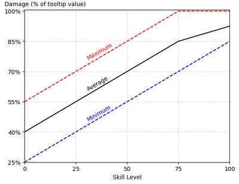
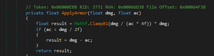
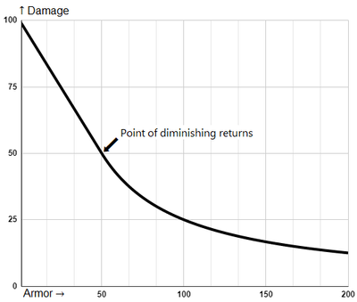

伤害机制
本站支持中英文站内搜索。带 ↗ 的链接指向外部网站；各页来源版本见页脚。
本页包含当前所有战斗机制和数值。
伤害
伤害按以下公式计算：
技能系数：。其中players表示玩家，enemies表示敌人，skill level表示技能等级。
伤害倍率：，即背刺加成×踉跄加成×攻击加成×多目标惩罚×伤害类型修正。
承受伤害的计算公式：。其中damage表示伤害，armor表示护甲。
注意: 只有玩家有护甲.
面板伤害
武器说明中，黄色括号前的橙色数字表示面板伤害。弓的伤害按弓与弹药的面板伤害之和计算。
部分武器具有多种伤害类型，例如弓及其弹药，或同时造成穿刺和劈砍伤害的刀。此时先分别对各类伤害应用抗性，再对总伤害应用护甲减免。
例如，攻击造成100火焰伤害和100钝击伤害，目标具有火焰抗性和75护甲。抗性先将火焰伤害减至50，再由75护甲将150总伤害减至75。最终受到25火焰伤害和50钝击伤害。
生物的最低伤害=0.75×伤害。应先应用这一修正，再计算护甲、格挡及其他修正。
技能系数


武器说明的黄色括号内显示伤害范围，由相应技能系数的最小值和最大值分别乘以面板伤害得出。
- 最低伤害随技能等级线性增长：技能等级0时为武器伤害的25%，技能等级100时为85%。
- 最高伤害随技能等级线性增长：技能等级0时为武器伤害的55%，技能等级75及以上时为100%。
因此:
- 平均伤害随技能等级线性增长：技能等级0时为武器伤害的40%，技能等级75时为85%，技能等级100时为92.5%。
这相当于在75级之前，每升一级平均伤害提高1.5%；此后每级提高0.75%。
背刺加成
攻击未察觉敌人时会应用背刺加成。伤害倍率显示在武器说明中，范围为2x至6x。
敌人受到背刺后，会获得5分钟背刺免疫。玩家始终免疫背刺。
踉跄加成
积累足够的失衡效果或成功弹反攻击会造成踉跄。踉跄中的敌人无法行动，并受到双倍伤害。玩家也会踉跄，但不会因此受到额外伤害。
每种敌人的踉跄持续时间不同，取决于动画速度。
攻击加成
具有连击的武器，其第三次命中造成双倍伤害。
大多数次要攻击的伤害也会提高或降低，倍率范围为0.5x至3x。
目标200米内每增加一名玩家，敌人的伤害提高4%。
多目标惩罚
对于适用此机制的攻击类型，同时命中多个实体会降低攻击伤害。伤害倍率可按以下公式计算：
- 2目标 :66.7%
- 3目标 :44.4%
- 4目标 :33.3%
- 5目标 :26.7%
不过，总伤害会比命中单个目标时高33.3%。
树木、岩石和地面也算有效目标，即使所用工具无法损伤它们。因此，攻击高处的敌人时经常会造成较低伤害。镐的命中范围与地面相交时，伤害同样会降低，即使敲击岩石时镐并不会影响地面。
大多数玩家武器受到多目标惩罚，例外包括剑的单手主攻击、双手武器棍棒、长柄武器的次要攻击，以及斧的双手主攻击。
大多数近战生物不受多目标惩罚；例外包括但不限于灰矮人、骷髅和狼。玩家可以利用此机制应对这些生物。例如，站在树旁，使强力攻击的伤害降低33%，从而弹反原本无法承受的攻击。
伤害类型修正
所有攻击都有伤害类型。敌人对不同伤害类型可能具有弱点、抗性或免疫。玩家也可能因状态效果和装备而具有弱点或抗性。弱点与抗性的修正如下：
- 极弱：200%伤害
- 弱点：150%伤害
- 中立 :100% 伤害
- 轻微抗性: 75% 伤害
- 抗性: 50% 伤害
- 超强抗性: 25% 伤害
- 免疫: 0% 伤害
更多信息请参阅伤害类型。
护甲
护甲会减少受到的所有伤害类型。
护甲低于原始伤害的一半时，损失生命值=伤害-护甲。若护甲高于伤害的一半，则损失生命值=(Damage / (Armor*4)) * Damage，其中Damage表示伤害，Armor表示护甲。




从有效生命值的角度看，这一“收益递减”公式仍然公平：承受多少次攻击才死亡，会以相同速率增加，因此每一点护甲的价值相同。下表展示了这一点：
| 护甲 | 损失生命值 | 死亡所需命中次数 |
| 0 | 40 | 2.5 |
| 10 | 30 | 3.333 |
| 20 | 20 | 5 |
| 30 | 13.333 | 7.5 |
| 40 | 10 | 10 |
| 50 | 8 | 12.5 |
| 60 | 6.666 | 15 |
格挡
格挡使用护甲公式减少受到的伤害。
格挡相比闪避具有以下优点：
- 格挡消耗较少耐力，弹反时甚至不消耗耐力。
- 格挡无需精确把握时机。
- 弹反会造成踉跄，使伤害翻倍。
闪避
闪避使玩家短暂无敌，能够避开大多数伤害来源。
闪避的基础耐力消耗为15，受多种效果修正：
- 闪避(技能)最多可使耐力消耗降低至-50%。
- 成功闪避攻击会返还一半耐力消耗，返还量会计入各项修正。
- 装备的速度惩罚会等比例增加耐力消耗。例如，-20%的速度惩罚会带来+20%的耐力消耗。
- 穿戴灰烬刚鬣披风提供-15%的消耗修正，食用狂战之酒提供-80%的消耗修正。
处于超重状态时无法闪避。
闪避相比格挡具有以下优点：
- 没有伤害限制。
- 应对多个敌人时，耐力消耗相同。
- 可选择方向来调整位置。
- 可应对来自任何方向的攻击。
- 能避开大多数无法格挡的攻击。
| 攻略 | |
|---|---|
| 玩家 | |
| 战斗 | |
| 生成 | |
| 建材 | |
| 界面 | |
| 世界 | |
| 杂项 | |
| 开发 | |
This page contains all current combat mechanics and stats.
Damage
Damage is calculated with the following formula:
Note: Only players have armor.
Listed damage
On the weapon tooltip the orange number shows the listed damage (before the yellow parentheses). Damage from bows is calculated from the sum of listed bow and ammo damage.
Some weapons have multiple types of damage (such as bows with their ammo or knives with both pierce and slash). In these cases, the resistances are applied separately to each damage type and then the armor is applied to the total damage.
For example 100 fire damage and 100 blunt damage with fire resist and 75 armor. First the resistance reduces fire damage to 50 and then 75 armor reduces the 150 total damage to 75. Final damage would be 25 fire and 50 blunt.
Minimum damage from a creature =. This modifier should be applied to the damage before taking armor, blocking, and other modifiers into account.
Skill factor
On the weapon tooltip a damage range is shown in yellow parentheses. This is determined by the minimum and maximum value of the related skill factor multiplied with the listed damage.
- Minimum damage increases linearly from 25% of weapon damage at skill level 0 to 85% of weapon damage at skill level 100.
- Maximum damage increases linearly from 55% of weapon damage at skill level 0 to 100% of weapon damage at skill level 75 and above.
Consequently:
- Average damage increases linearly from 40% of weapon damage at skill level 0 to 85% of weapon damage at skill level 75, and to 92.5% of weapon damage at level 100.
This correspond to a 1.5% increase of the average damage per level up to level 75, and 0.75% after.
Backstab bonus
Backstab bonus is applied when attacking unaware enemies. The damage multiplier is shown on the weapon tooltip (from 2x to 6x).
Backstabbing an enemy gives it a backstab immunity for 5 minutes. Players are immune to backstab.
Stagger bonus
Staggering is caused either by enough Staggering or by successfully parrying an attack. While staggered, the enemy is unable to act and takes double damage. Players can also get staggered but they won't take extra damage.
Staggering is caused by Physical and Lightning damage. Some attacks cause increased Staggering.
Duration of the stagger is different for every enemy and depends on the animation speed.
Attack bonus
Weapons with an attack chain deal double damage on the third hit.
Most secondary attacks also deal increased or reduced damage (from 0.5x to 3x).
Enemies deal 4% more damage for each additional player within 200 meters of the target.
Multitarget penalty
If applicable for the attack type, hitting multiple entities reduces the damage of the attack. The damage multiplier can be calculated with
- 2 targets: 66.7%
- 3 targets: 44.4%
- 4 targets: 33.3%
- 5 targets: 26.7%
However the total damage will be 33.3% higher than when hitting a single target.
Trees, rocks, and ground also count as a valid target, even if not using tools that can damage them. This often causes reduced damage when attacking enemies on a higher ground. Pickaxes also deal reduced damage when the hitbox intersects the ground, even though hitting rock makes the ground unaffected by the pickaxe.
Most player weapons have the multitarget penalty; exceptions are Swords (one-handed primary attack), Clubs (two-handed), Polearms (secondary attack) and Axes (two-handed primary attack).
Most melee creatures do not have the multitarget penalty; exceptions include but not limited to: Greydwarfs, Skeletons, Wolves. Players can take advantage of this mechanic against these creatures. For example, to parry a strong attack that the player otherwise couldn't, by standing next to a tree to reduce the damage by 33%.
Damage type modifier
All attacks have a damage type. Enemies have weakness, resistance or immunity against different damage types. Players may also have weaknesses or resistances depending on their status effects and gear. The modifier for weakness and resistance is as follows:
- Very weak: 200% damage
- Weak: 150% damage
- Neutral: 100% damage
- Slightly Resistant: 75% damage
- Resistant: 50% damage
- Very resistant: 25% damage
- Immune: 0% damage
See Damage types for more info.
Armor
Armor reduces damage taken from all damage types.
If armor is less than half of raw damage,
health lost = damage - armor
But if armor is more than half of the damage, health lost = (Damage / (Armor*4)) * Damage
The formula for "diminishing returns" is still fair from the perspective of effective HP. That is, the number of "hits" until death increases at the same rate, so each point of armor is worth as much as the next. The below table illustrates this:
| Armor | Health Lost | Hits until death |
| 0 | 40 | 2.5 |
| 10 | 30 | 3.333 |
| 20 | 20 | 5 |
| 30 | 13.333 | 7.5 |
| 40 | 10 | 10 |
| 50 | 8 | 12.5 |
| 60 | 6.666 | 15 |
Blocking
Blocking reduces received damage by using the armor formula.
Blocking has some benefits over dodging:
- Blocking uses less stamina (or no stamina when parrying).
- Blocking does not require precise timing.
- Parrying causes stagger which doubles the damage.
Dodging
Dodging turns the player briefly invulnerable, allowing to ignore most sources of damage.
Dodging uses a base 15 Stamina, modified by various effects:
- Dodge (skill) reduces the stamina cost down to -50%.
- Dodging an attack returns half the stamina cost, taking modifiers into account.
- Gear speed penalty increases the stamina cost by the same amount. For example, having -20% speed penalty gives +20% stamina cost.
- Wearing an Asksvin Cloak reduces by -15%, consuming a Berserkir Mead by -80%.
Dodge cannot be performed while Encumbered.
Dodging has some benefits over blocking:
- No damage limit.
- Works against multiple enemies with the same stamina usage.
- Allows repositioning by choosing the direction.
- Works against attacks from any direction.
- Dodging works against most attacks that cannot be blocked.
| Guides | |
|---|---|
| Player | Player • Health • Stamina • Eitr • Adrenaline • Death • Forsaken power • Skills • Status effects • Movement speed • Magic • Fishing • Riding • Sleeping • Emotes |
| Combat | |
| Spawning | |
| Building | |
| UI | |
| World | |
| Misc | |
| Development | |